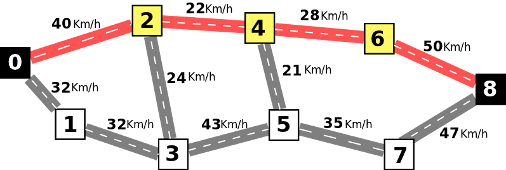
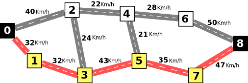
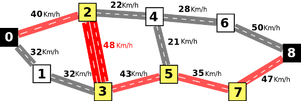
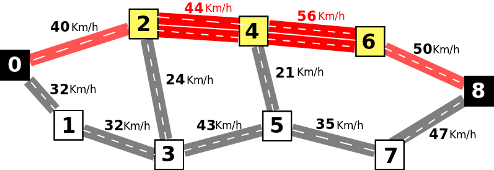

Para efeitos da nota atribuida à resolução de exercícios ao longo do semestre - Submeter até 23:59 de 12 de Junho
(o problema continuará depois disponível para submissão, mas sem contar para a nota)
[para perceber o contexto do problema deve ler o guião da aula #10]
Um dos maiores problemas da cidade onde Rafael vive é o complicado trânsito automóvel. Todos os dias ele vai de casa para o trabalho em plena hora de ponta e muito tempo é passado completamente parado no trânsito, algo que o irrita profundamente. Rafael decide por isso planear cuidadosamente o melhor caminho a seguir.
Os anos acumulados a conduzir na cidade permitiram-lhe fazer uma mapa detalhado com informações sobre o trânsito. Para simplificar, Rafael decidiu numerar os vários locais da cidade com números de 0 a N-1, sendo que a sua casa está sempre no local 0 e o trabalho no local N-1. O mapa define estradas entre pares de locais, indicando a respetiva velocidade média de circulação automóvel. Nota que todas as estradas permitem a circulação em ambos os sentidos. Dado um caminho, o seu valor final é igual à menor velocidade média de uma das suas estradas constituintes.
A figura seguinte ilustra um caminho entre 0 (casa) e 8 (trabalho). Este caminho percorre os locais 0, 2, 4, 6 e 8, por esta ordem, e tem um valor de 22 Km/h, o mínimo das velocidades médias das suas estradas, que são 40, 22, 28 e 50.

É no entanto possível fazer melhor se seguirmos o caminho indicado pela próxima figura, que tem um valor de 32 Km/h, superior ao caminho anterior:

O Rafael sabe que que o presidente da câmara municipal tem disponível dinheiro para renovar algumas estradas. Uma estrada renovada transforma-se numa avenida com duas vias de circulação em cada sentido, o que duplica o valor da sua velocidade média. Por exemplo, caso fosse renovada a estrada entre os locais 2 e 3, a sua velocidade média passava a 48 Km/h, e o seguinte caminho de valor 35 Km/h (melhor que os anteriores) passava a ser possível:

Na realidade, a câmara terá dinheiro para renovar no máximo K estradas. Como o Rafael acha que sem dúvida o caminho que ele faz é muito importante, decide enviar à câmara uma carta explicando quais as estradas que deveriam ser renovadas para lhe permitir ter o melhor caminho possível. Por exemplo, se K fosse 1, o cenário explicado na figura anterior era o melhor que se poderia obter. Caso K seja 2, já não é assim. Neste caso, o melhor que se pode fazer é renovar as estradas entre 2 e 4, e entre 4 e 6, o que lhe permitiria fazer um caminho de valor 40 Km/h, tal como ilustrado na figura seguinte:

E para um caso geral? Quais seriam as estradas a renovar de modo a conseguir o melhor caminho possível para o Rafael?
Dada um mapa com N locais, um conjunto de E estradas, com velocidades médias de circulação entre A e B iguais a VA,B e um número K que indica o número de estradas que é possível renovar (duplicando a velocidade média), a tua tarefa é calcular qual o valor do melhor caminho possível de obter para ir do local 0 (a casa) até N-1 (o trabalho), depois de serem feitas um máximo de K renovações.
A primeira linha do input contém um único inteiro N, o número de locais. A segunda linha contem um único inteiro E, o número de estradas existentes.
Seguem-se E linhas, cada uma contendo três inteiros A B VA,B, separados por um único espaço, indicando que existe uma estrada entre A e B com velocidade média VA,B. As estradas podem vir por qualquer ordem e nunca existem duas estradas diferentes entre o mesmo par de locais. Não podem existir estradas diretas de uma posição para si própria e existe sempre pelo menos um caminho entre 0 e N-1.
Finalmente, na linha seguinte, vem um único inteiro K, indicando o número de estradas que se pode renovar.
O output deve ser constituído por uma linha contendo um único número inteiro representando o valor do melhor caminho possível de obter fazendo no máximo K renovações.
O valor de um caminho é igual à mínima velocidade média de uma das suas estradas constituintes. O melhor caminho é aquele que apresenta o maior valor possível. Nota que podes escolher fazer as renovações que dão origem ao melhor caminho e que uma estrada só pode ser renovada uma única vez. Se K for zero, então o resultado corresponde ao melhor caminho sem nenhuma renovação de estrada.
São garantidos os seguintes limites em todos os casos de teste que irão ser colocados ao programa:
| 2 ≤ N ≤ 5 000 | Número de locais do mapa | |
| 1 ≤ E ≤ 50 000 | Número de estradas | |
| 1 ≤ VA, B ≤ 200 | Velocidade média de uma estrada | |
| 0 ≤ K ≤ 20 | Número de renovações de estrada |
Para um conjunto de casos de teste valendo 40% dos pontos, acontece sempre que N≤10, E≤40 e K≤1.
Exemplo de Input 19 11 0 2 40 2 4 22 4 6 28 6 8 50 0 1 32 1 3 32 3 5 43 5 7 35 7 8 47 2 3 24 4 5 21 1 Exemplo de Output 135 |
Exemplo de Input 29 11 0 2 40 2 4 22 4 6 28 6 8 50 0 1 32 1 3 32 3 5 43 5 7 35 7 8 47 2 3 24 4 5 21 2 Exemplo de Output 240 |
Desenho e Análise de Algoritmos (CC2001)
DCC/FCUP - Faculdade de Ciências da Universidade do Porto